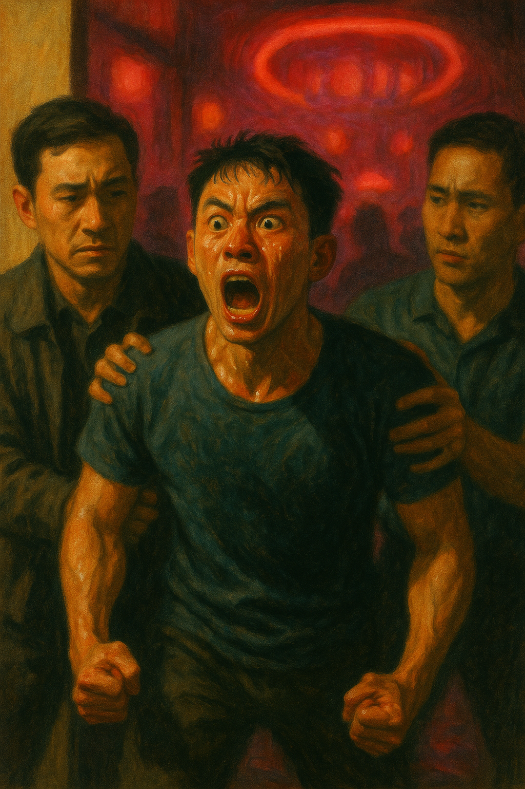
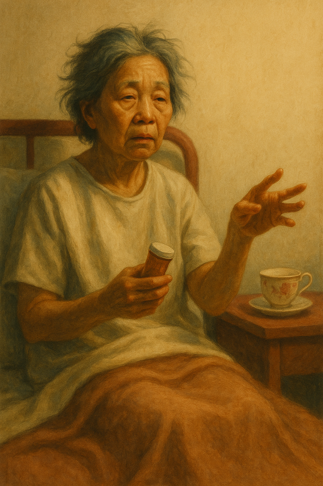
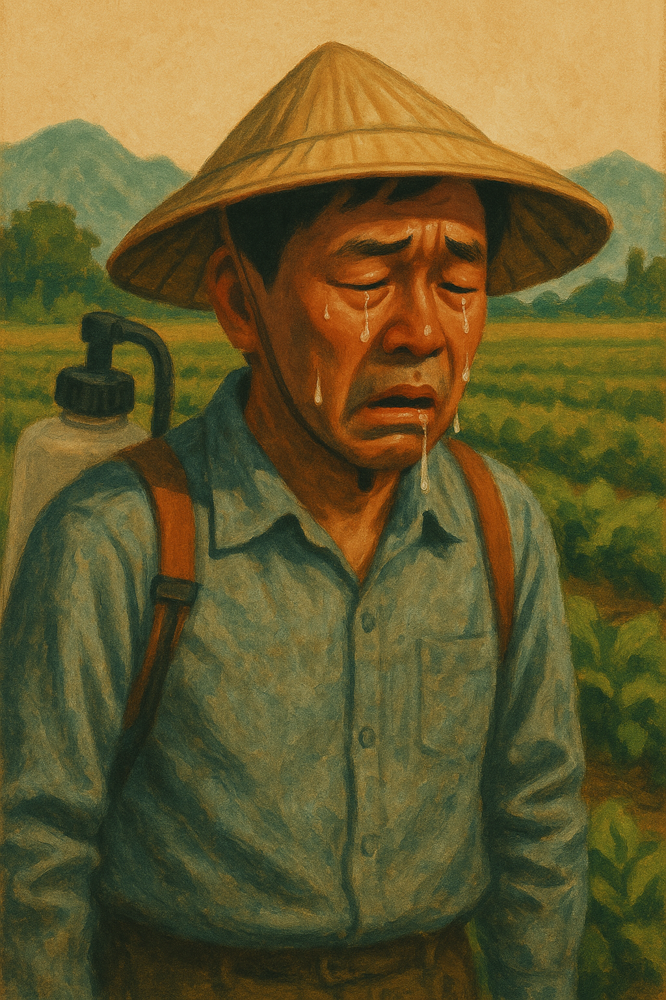
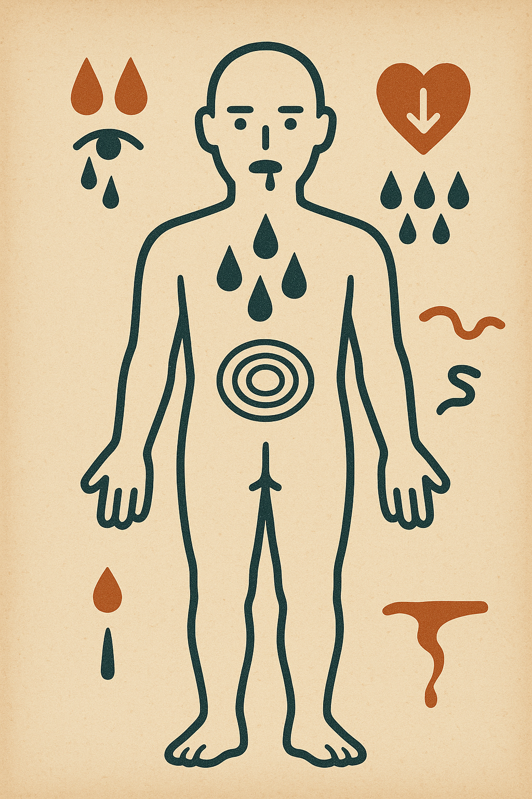
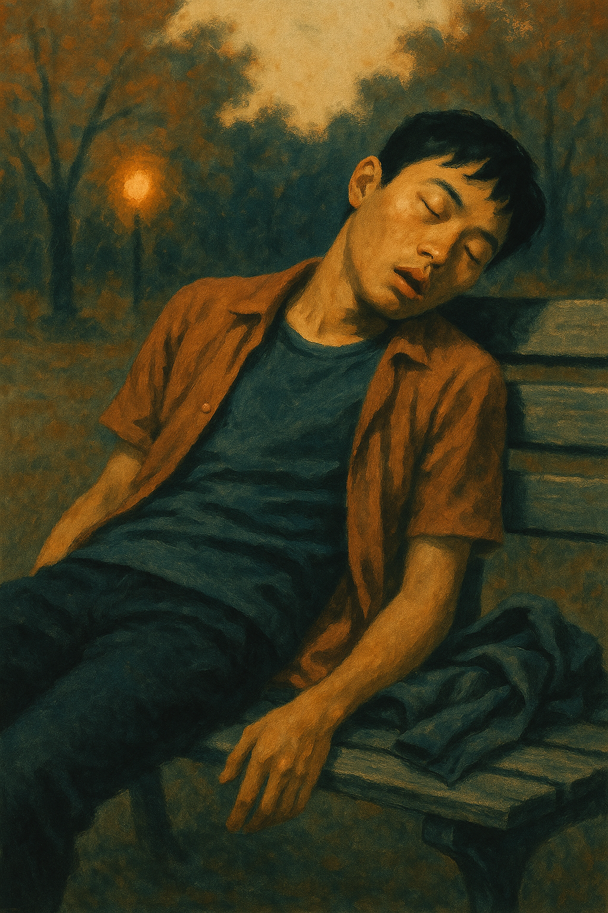
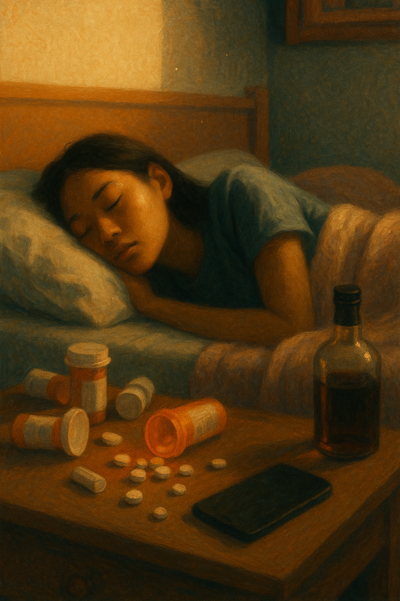
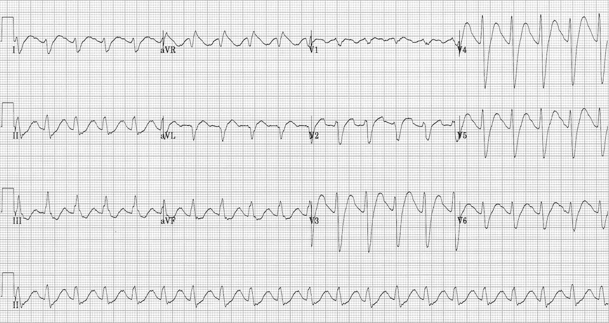

新進急診與加護病房護理師
的中毒病人 60 分鐘速成。
五招拆解：病史 · 症候群 · 暗號 · 解毒 · 救命。
「醫師寫的是『意識不清待查』，
但是你在 5 分鐘後抬頭說：
『他瞳孔針尖、呼吸很慢。』」
中毒病人不會自己舉手說「我吞了 50 顆 TCA」。
他只會躺在那邊，等你發現異常。
☞ 你是急診的華生——醫師還在當福爾摩斯推理時，你已經用 vital signs 破案了。
今晚目標 — 建立三秒反射：
看 vital signs → 看瞳孔 → 摸皮膚 → 心裡有答案。
病史不可靠
家屬問話技巧
交感／抗膽鹼／
膽鹼／鴉片／鎮靜
瞳孔／皮膚／
QRS／尿液 tox
活性碳／WBI／
Naloxone／NAC
抽搐／躁動／
高體溫／心律不整
病史不可靠時，
身體會自己說真話。
「他平常吃哪些藥？藥袋還在不在？最近有沒有看醫師拿新藥？」——比問「吃了多少」實用十倍。
問「吃了什麼」就像問前任「最近好嗎」——答案永遠是「還好」。
請救護員、家屬甚至警察回現場，拍下每個藥瓶的標籤與剩餘數量。
空藥瓶 = 病人的供詞。比測謊機準。
看到 BZD 別忘了驗 APAP。看到 APAP 別忘了驗 salicylate。看到酒精別忘了測 EtOH + anion gap。
想像你是衣櫃——通常至少有兩件衣服掉下來。
中毒病人的病史，跟前任的承諾一樣
—— 不能信。
交感 · 抗膽鹼 · 膽鹼 · 鴉片 · 鎮靜安眠
—— 90% 的中毒都在這五個籃子裡。
| 毒症候群 | HR | BP | RR | T | 瞳孔 | 皮膚 | 意識 |
|---|---|---|---|---|---|---|---|
| 交感興奮Sympathomimetic | ↑↑ | ↑↑ | ↑ | ↑↑ | 散大 | 潮紅+汗 | 躁動 |
| 抗膽鹼Anticholinergic | ↑ | ↑ | → | ↑ | 散大 | 乾紅熱 | 譫妄 |
| 膽鹼性Cholinergic | ↓ | ↓ | ↑痰 | → | 針尖 | 大量分泌 | 無力／抽搐 |
| 鴉片Opioid | ↓ | ↓ | ↓↓ | ↓ | 針尖 | 濕冷 | 昏睡 |
| 鎮靜安眠Sedative-hypnotic | ↓ | ↓ | ↓ | → | 多正常 | 正常 | 昏睡 |
速記：交感「樣樣高 + 出汗」 · 抗膽鹼「樣樣高 + 乾燥」 · 膽鹼「全身漏水」 · 鴉片「樣樣低 + 針尖」 · 鎮靜「就是睡到不行」
☞ 這張表是中毒病人的命盤。對到了，人生就有解釋。

「喝了二十杯星巴克加五罐紅牛的鋼鐵人。」
☞ 單獨用 β-blocker = 火上澆油，還倒一桶油下去泡澡。

「乾得像沙漠的瘋帽客。」
☞ TCA 還附贈第二殺器（Na 通道阻斷）。買一送一，包君死路。

「全身漏水的水龍頭。救人前，先關自己這道。」
☞ 把 bronchorrhea 當心衰治會死人——這不是太多水，是太多『水龍頭沒關』。


「被睡神綁架的針孔人，鑰匙叫 Naloxone。」
☞ Naloxone 一次推 2mg = 把睡美人直接踹醒，她會吐你一身 + 戒斷躁動 + 罵你 ××。慢慢來。

「就是睡到不行——但不要反射性叫醒她。」
☞ Flumazenil 在多重中毒 = 把人從 BZD 的安全屋拉出來，丟到 TCA 火坑。
口訣：「散瞳分汗、針尖分水」。其他不確定，先當 sedative-hypnotic 支持治療。
瞳孔 · 皮膚 · 肌張力 · ECG · 實驗室
—— 護理師能在 5 秒抓到的線索。
☞ QRS 寬 = 心臟在拖延 · QT 長 = 心臟在猶豫 · 慢心律 = 心臟在罷工
| ECG Pattern | 常見毒物 | 處置 |
|---|---|---|
| QRS > 100 ms（變寬） | TCA、Cocaine、Diphenhydramine、Bupropion、Class I 抗心律不整藥 | Sodium Bicarbonate1–2 mEq/kg IV bolus |
| QTc > 500 ms（變長） | 抗精神病、Methadone、Ondansetron、Sotalol、Citalopram | Mg + K 補足停藥、注意 Torsades |
| 慢心律 + AV block | Digoxin、β-blocker、CCB（Verapamil/Diltiazem） | Dig-Fab ／ Glucagon ／高劑量胰島素 |
建議：早期中毒病人連續 ECG。心臟毒性可能延後幾小時才出現。
☞ aVR 那個翹尾巴的小 R 波，是 TCA 留下的指紋——比 DNA 還準。

確診儀式：給 NaHCO₃ 1–2 mEq/kg IV bolus，看 QRS 是否變窄。變窄 = 確診，繼續輸注到 QRS < 100 ms + pH 7.45–7.55。 ☞ 比抽血等三天快。
日常處方藥就會讓 urine tox 跳出毒品陽性——陽性 ≠ 中毒。
☞ Bupropion 讓 amphetamine 跳陽性——所以吃抗憂鬱藥的人可能被當成毒蟲。罌粟籽麵包也會中槍。
這些「驗不到」的，剛好是台灣最常處方／最致命的——陰性 ≠ 沒中毒。
☞ Fentanyl 在 urine tox 像隱形人——你看不到它，但它能殺你。
結論：urine tox 是輔助，不是主要決策。臨床 gestalt（toxidrome + vitals + ECG）優先。
擋下 · 清掉 · 解掉 · 評估氣道
—— 別把過時的常規當教條。
☞ 「GCS < 8 就插管」是醫學界的「分手要分清」——聽起來合理，做起來看狀況。
臨床指引明確指出：GCS < 8 自動插管的 dogma 是錯的。中毒病人決策要綜合判斷。
Gag reflex 不可靠。要看：
① 吞嚥反射 ② 分泌物有沒有累積 ③ 咳嗽是否有力
☞ 戳他喉嚨他乾嘔，不代表他能保住氣道。能不能咳痰才是真功夫。
這三個試完還是 unresponsive，再考慮插管。
☞ 活性碳對酒精無效——所以宿醉時別吞炭，只會拉黑色屎還浪費錢。
劑量：1 g/kg（25–100 g） · 毒物：碳 = 1：10 · 封頂 ~100 g
☞ 100 g = 五大碗炭粉。病人會恨你，但會活下來。
酒精類、Hydrocarbon、有機磷、Carbamate、強酸／強鹼、鉀、鐵、鋰、氰化物、氟化物
☞ 口訣：「無機物（金屬離子）+ 小分子液體」活性碳沒轍。
Barbiturate、Carbamazepine、Dapsone、Glutethimide、Paraquat、Quinine、Theophylline
適應症（七毒）：Amatoxin（毒蕈）、Carbamazepine、Colchicine、Dapsone、Phenobarbital、Quinine、Theophylline
劑量：Loading 1 g/kg（50–100 g） · Maintenance 50 g q4hr
☞ 這七個有腸肝循環，活性碳像門口的保鑣，藥物每次想回血都被攔截。
技術：NG / OG 灌 PEG (GoLytely) 1.5–2 L/hr，至 effluent 清澈為止。嘔吐就降速。
☞ 從上灌到下、看清水流出——像幫病人做大腸鏡前的準備，沖到「金黃變透明」。
禁忌：腸阻塞 ／ ileus ／ 血流動力學不穩
☞ 前面幾個是床邊隨時要有的——像護理師的瑞士刀。
抽搐 · 躁動 · 高體溫 · 心律不整
—— 中毒病人不是死於毒，是死於這四個。
Toxic Seizures
Bupropion、Citalopram、TCA、Venlafaxine、Lithium、Na channel blockers、Sympathomimetics、Tramadol、Salicylate、戒斷、Methylxanthines（咖啡因、Theophylline）、INH、Gyromitra 鹿花蕈
Toxic Agitation
躁動 → 肌肉狂收縮 → 橫紋肌溶解 + 高體溫 + 代謝酸中毒 → 心律不整 / 心搏停止
Toxic Hyperthermia
T > 40–41°C。促 seizure、rhabdo、肝衰。退燒藥沒用（不是 setpoint 問題，是熱能過多）。
☞ 給普拿疼像在火災現場噴香水。
Toxic Bradycardia
中毒性慢心律對標準 ACLS protocol 可能 refractory。Atropine、起搏可能無效，必須找原因治。
☞ ACLS 公式在這裡跳針——心臟不理你的 Atropine。
Monomorphic VT
VS 4 個 + 瞳孔 + 皮膚 = 90% 的中毒答案。尿液 tox 是輔助——陽性可能假、陰性可能漏（fentanyl、lorazepam、alprazolam 都驗不到）。
QRS > 100 ms ／ T > 40°C ／ 抽搐 ／ GCS 突然掉——任何一個都是 ICU 等級警訊。順手準備 NaHCO₃、BZD、冰袋。
不明粉末／液體／衣物味道 → 戴 PPE、脫衣、沖洗。家屬情緒不穩 → 叫保全。你倒下，沒人能救病人。
記得自問——
vital signs 怎麼動？瞳孔怎麼樣？皮膚乾還是濕？
台灣毒物諮詢專線（24 hr）
02 – 2871 – 7121
榮總臨床毒物與職業醫學部